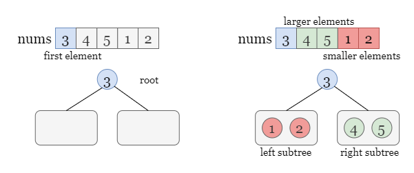
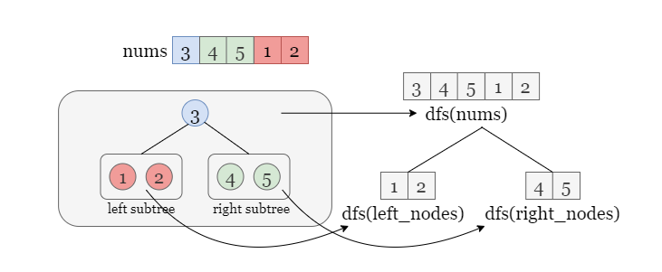
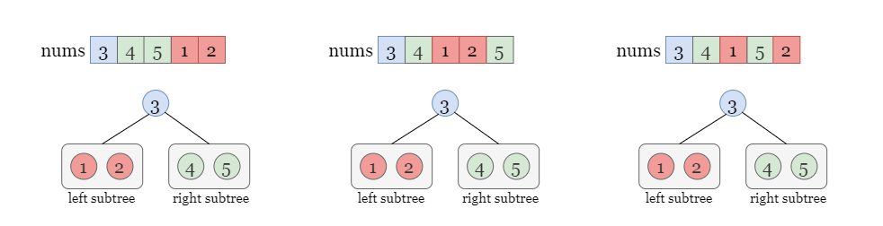
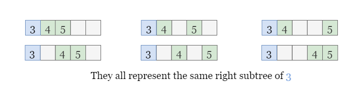
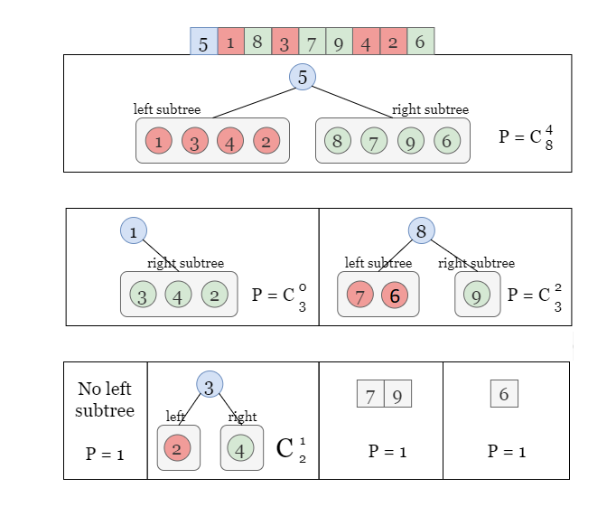

Number of Ways to Reorder Array to Get Same BST - Solution
Approach: Recursion
Intuition
We can make the following conclusions:
-
The first element of nums always corresponds to the root node of the corresponding BST.
-
According to the definition of a binary search tree (BST), all elements less than the root value belong to
the left subtree, while all elements greater than the root value belong to the right subtree (as shown in
the figure below). Let's temporarily ignore the specific structure of the left and right subtrees for
now.

Let dfs(nums) denote the number of permutations of nums that result in the same BST as
nums. When iterating over the elements of nums[1:], we can construct two subtrees using
the subsequences left_nodes = [4, 5] and right_nodes = [1, 2] by adding each element to
either the left or right subtree of the root. As long as the relative position of the elements
within [1, 2] or [4, 5] remains unchanged, rearranging their positions in
nums does not affect the construction of the subtrees.
It should be noted that maintaining the relative positions of the numbers in each sequence does not necessarily
mean that rearranging the order will always result in a different BST. However, this issue will be addressed in
the next level of the subproblem, which will be considered in dfs(left_nodes) or dfs(right_nodes)
by allowing the order to be changed. In the current level of recursion dfs(nums), we do not
consider the issue of the next level.

Therefore, we obtain the following recursive relation:
dfs(nums)=dfs(left_nodes)⋅dfs(right_nodes)\text{dfs(nums)} = \text{dfs(left\_nodes)} \cdot \text{dfs(right\_nodes)}dfs(nums)=dfs(left_nodes)⋅dfs(right_nodes)
However, it is important to note that the actual number of valid permutations may exceed the calculated number from
above. This is because there are some permutations that do not alter the relative order of the nodes in left_nodes
and right_nodes thus resulting in the same BST.
For instance, let's consider the original array [3,4,5,1,2]. Here, we use [1, 2] to
construct the left subtree and [4, 5] to construct the right subtree. If we only change the positions
of 1 and 2 in nums[1:] without altering their relative order, the
subsequences used to construct the left and right subtree will still be [1, 2] and [4, 5],
resulting in the same left subtree.

This implies that we need to adjust the formula by multiplying it with a coefficient (PPP)
that represents the number of permutations that preserve the relative order of nodes in the two subsequence left_nodes
and right_nodes. This leads to the modified equation:
dfs(nums)=P⋅dfs(left_nodes)⋅dfs(right_nodes)\text{dfs(nums)} = P\cdot \text{dfs(left\_nodes)} \cdot \text{dfs(right\_nodes)}dfs(nums)=P⋅dfs(left_nodes)⋅dfs(right_nodes)
It is possible to arbitrarily select two cells to hold the nodes of the left subtree, and there are 6 permutations
that generate the same left_nodes and right_nodes. Therefore, we set P=6P=6P=6
in the above equation.

In general, for an array of length m with left nodes in the left subtree, then the number
of valid permutations is equal to the number of ways of selecting k cells from m - 1 cells
(excluding the first cell that represents the root). This can be expressed using the binomial coefficient formula:
Cm−1left=(m−1left)=(m−1)!left!(m−1−left)!C_{m-1}^\text{left} = \binom{m-1}{\text{left}} = \frac{(m-1)!}{\text{left}!(m-1-\text{left})!}Cm−1left=(leftm−1)=left!(m−1−left)!(m−1)!
If you are not aware of the binomial coefficient, let's get a brief idea about it (click to expand) We
have hidden this section in order to keep the main content coherent. Our focus is on practical applications
rather than on specific implementations and theories.
To efficiently compute the binomial coefficients, we can use Pascal's triangle and precompute a table to avoid
repetitive calculations. To build this table, we first determine the number of rows we need based on the size of
nums, denoted as m. We create a m×mm \times mm×m
table to represent the first m - 1 rows of Pascal's triangle.
The numbers in Pascal's triangle are generated by summing the two numbers directly above it. We initialize the
first column and the main diagonal as 1. We then iterate over the lower-left half of the table,
starting from table[2][1], and compute table[i][j] as the sum of table[i - 1][j
- 1] and table[i - 1][j].

After building the table, we can efficiently compute the value of CnkC_n^kCnk
by directly looking up table[n][k].
Now we can recursively solve this problem by dividing nums into two subsequences left_nodes
(of length k) and right_nodes, and the number of valid permutations is denoted as
dfs(nums)=P⋅dfs(left_nodes)⋅dfs(right_nodes)=Cnk⋅dfs(left_nodes)⋅dfs(right_nodes)\text{dfs(nums)} \\= P\cdot \text{dfs(left\_nodes)} \cdot \text{dfs(right\_nodes)} \\= C_{n}^{k}\cdot \text{dfs(left\_nodes)} \cdot \text{dfs(right\_nodes)}dfs(nums)=P⋅dfs(left_nodes)⋅dfs(right_nodes)=Cnk⋅dfs(left_nodes)⋅dfs(right_nodes).
where CnkC_{n}^{k}Cnk
can be obtained by using the precomputed table we discussed before or built-in functions. We treat the calls to
dfs on the two subsequences as subproblems, and recursively solve them. The algorithm always selects
the first element as the root value, and the size of the input array gradually decreases as the recursion
progresses.
If the input array nums contains one or two elements, it only has one permutation that constructs the
same BST (which is nums itself). Thus we have dfs(nums) = 1 when nums.length <
3, which are the base cases.
Take the picture below as a detailed example.
-
For nums = [5, 1, 8, 3, 7, 9, 4, 2, 6], we need to keep the relative order in [1, 3, 4,
2] and [8, 7, 9, 6] unchanged, there could be C84C_8^4C84
different permutations.
-
Now we move on to the left subtree constructed by [1, 3, 4, 2], there is no left subtree for
root = 1 so we have the coefficient as C30C_3^0C30.
-
For the right subtree constructed by [3, 2, 4], we have the coefficient as C21C_2^1C21.
and so on.

Therefore, the number of permutations is equal to the product of all coefficients, which is answer=C84⋅C30⋅C32⋅C21⋅1⋅1⋅1\text{answer} = C_8^4 \cdot C_3^0 \cdot C_3^2 \cdot C_2^1 \cdot 1 \cdot 1 \cdot 1answer=C84⋅C30⋅C32⋅C21⋅1⋅1⋅1.
Lastly, don't forget to return (answer−1)%(109+7)(\text{answer} - 1) \% (10^9 +7)(answer−1)%(109+7) as we don't count the original nums as a valid
permutation.
Algorithm
-
Define a function dfs(nums) as the number of valid permutations.
- If the size of
nums is less than 3, meaning there are 0, 1, or 2 nodes, the function
returns 1, as there is only one possible permutation in each of these cases.
- Otherwise, the function selects the first element of
nums as the value of the root node. It
then partitions the remaining elements nums[1:] into two subsequences,
left_nodes and right_nodes, representing the values of the nodes in the left
and right subtrees, respectively.
- Let
m be the size of nums and k be the size of
left_nodes. Return the product of dfs(left_nodes) * dfs(right_nodes) and CnkC_n^kCnk.
-
In Java or C++, we need to build a table of Pascal's of size m×mm \times mm×m,
since there are at most m−1m - 1m−1
nodes in a subtree,
- Initialize the first column and the main diagonal of the table to
1.
- Iterate over each empty cell in the lower left triangle of
table from top to bottom and
from left to right. Set table[i][j] as table[i - 1][j] + table[i - 1][j - 1].
Return table[n][k] if we need to compute CnkC_n^kCnk.
-
Return (dfs(nums) - 1) % (1_000_000_007).
Implementation
Java
class Solution {
private long mod = (long)1e9 + 7;
private long[][] table;
public int numOfWays(int[] nums) {
int m = nums.length;
// Table of Pascal's triangle
table = new long[m][m];
for (int i = 0; i < m; ++i) {
table[i][0] = table[i][i] = 1;
}
for (int i = 2; i < m; i++) {
for (int j = 1; j < i; j++) {
table[i][j] = (table[i - 1][j - 1] + table[i - 1][j]) % mod;
}
}
List arrList = Arrays.stream(nums).boxed().collect(Collectors.toList());
return (int)((dfs(arrList) - 1) % mod);
}
private long dfs(List nums) {
int m = nums.size();
if (m < 3) {
return 1;
}
List leftNodes = new ArrayList<>();
List rightNodes = new ArrayList<>();
for (int i = 1; i < m; ++i) {
if (nums.get(i) < nums.get(0)) {
leftNodes.add(nums.get(i));
} else {
rightNodes.add(nums.get(i));
}
}
long leftWays = dfs(leftNodes) % mod;
long rightWays = dfs(rightNodes) % mod;
return (((leftWays * rightWays) % mod) * table[m - 1][leftNodes.size()]) % mod;
}
}
C++
class Solution {
public:
int numOfWays(vector& nums) {
int m = nums.size();
// Table of Pascal's triangle
table.resize(m + 1);
for(int i = 0; i < m + 1; ++i) {
table[i] = vector(i + 1, 1);
for(int j = 1; j < i; ++j) {
table[i][j] = (table[i - 1][j - 1] + table[i - 1][j]) % mod;
}
}
return (dfs(nums) - 1) % mod;
}
private:
vector> table;
long long mod = 1e9 + 7;
long long dfs(vector &nums){
int m = nums.size();
if(m < 3) {
return 1;
}
vector leftNodes, rightNodes;
for(int i = 1; i < m; ++i){
if (nums[i] < nums[0]) {
leftNodes.push_back(nums[i]);
} else {
rightNodes.push_back(nums[i]);
}
}
long long leftWays = dfs(leftNodes) % mod;
long long rightWays = dfs(rightNodes) % mod;
return (((leftWays * rightWays) % mod) * table[m - 1][leftNodes.size()]) % mod;
}
};
Python3
class Solution:
def numOfWays(self, nums: List[int]) -> int:
mod = 10 ** 9 + 7
def dfs(nums):
m = len(nums)
if m < 3:
return 1
left_nodes = [a for a in nums if a < nums[0]]
right_nodes = [a for a in nums if a > nums[0]]
return dfs(left_nodes) * dfs(right_nodes) * comb(m - 1, len(left_nodes)) % mod
return (dfs(nums) - 1) % mod
Complexity Analysis
Let mmm
be the size of nums.